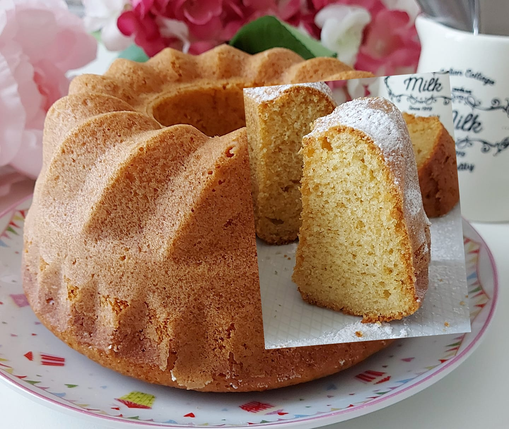

Ciambellone allo yogurt
Ingredienti
- 375 g di farina
- 125 g di yogurt
- 7 cucchiai di zucchero
- 65 g di olio di semi
- 3 uova
- 1 bustina di lievito
Preparazione
1. Preparazione dell'Impasto:
- Inizia montando le uova con lo zucchero in una ciotola fino a ottenere un composto chiaro e spumoso.
- Aggiungi lo yogurt e mescola bene per amalgamare.
- Incorpora la farina setacciata, continuando a mescolare.
- Aggiungi l'olio e, infine, il lievito, mescolando fino a ottenere un impasto liscio e omogeneo.
2. Cottura:
- Versa il composto in uno stampo per ciambellone precedentemente imburrato e infarinato.
- Cuoci in forno preriscaldato a 180°C per 35-40 minuti. Controlla la cottura con uno stecchino: se esce pulito, il ciambellone è pronto.
3. Raffreddamento:
- Lascia raffreddare il ciambellone nello stampo per alcuni minuti, poi trasferiscilo su una griglia per farlo raffreddare completamente.